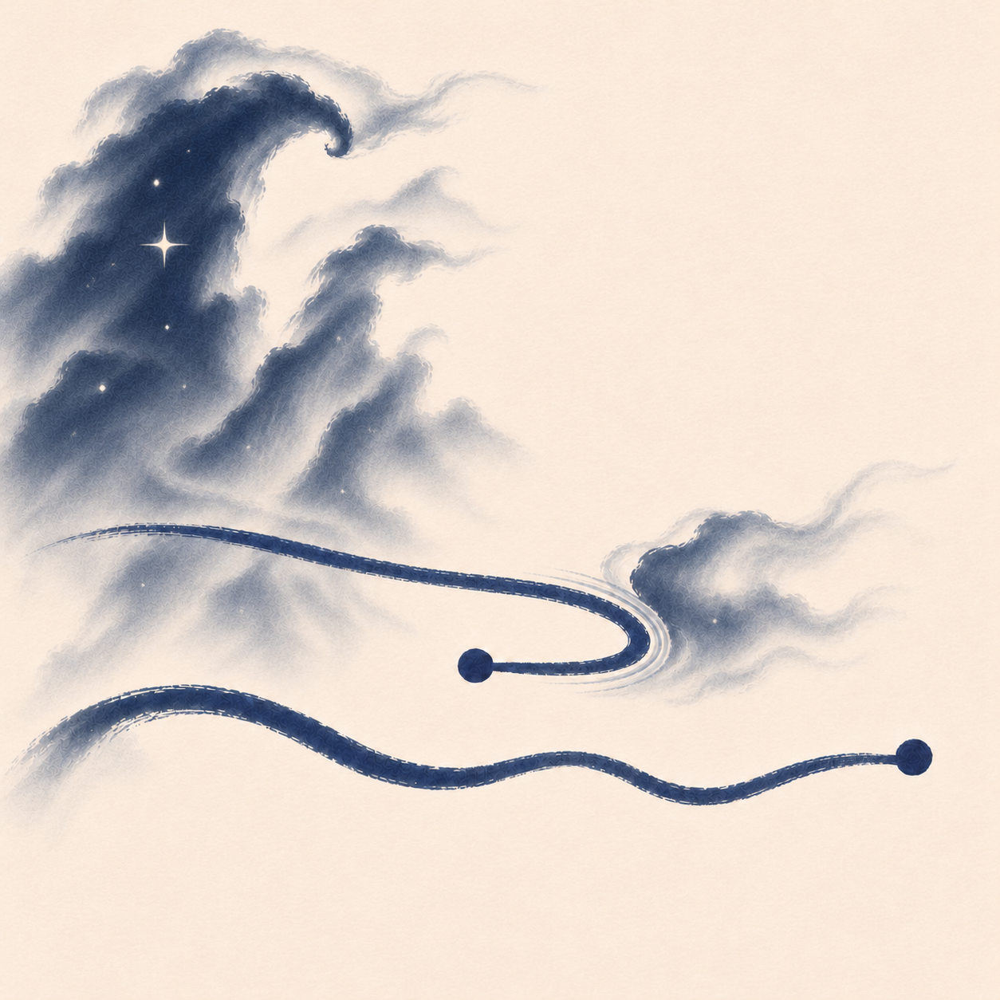

Research


My thesis follows cosmic rays from the flows that accelerate them into the interstellar gas they travel through. I study how magnetic fields scatter these particles near their sources and in cold gas farther away.
The ink landscape shows cosmic-ray paths bending near a magnetized interstellar cloud.
Starting now
Cosmic-ray transport and feedback
How often do cosmic rays scatter, and how does that set their ability to move energy through a galaxy?
Published · ApJ, 2026
Particle acceleration in shear-driven turbulence
How a turbulent shear layer turns a sequence of small, random kicks into a high-energy particle population.
Manuscript completed · 2026
Heating filaments in multiphase turbulence
Can magnetized turbulence supply the heat that keeps cold filaments glowing in galaxy clusters?
Published · Physical Review Fluids, 2024
Rayleigh–Taylor unstable flames
Why some burning fronts settle into traveling waves while others break into chaotic, growing bubbles.
Codes and computing
The plasma work uses Athena++. The filament-heating simulations evolve radiatively cooling MHD with explicit resistivity and viscosity, up to an effective 20483 grid. The particle-acceleration and cosmic-ray transport projects use its MHD particle-in-cell module, which evolves the background fluid with MHD while treating the energetic particles kinetically. The flames work used Nek5000, a spectral-element code, at 512 × 2304 elements and order N = 9. These simulations use NSF-supported machines through XSEDE and ACCESS, and the analysis is Python.
Setups, the analysis package and the figure scripts for the flames paper are on Zenodo under GPL-3.0: 10.5281/zenodo.13750992.